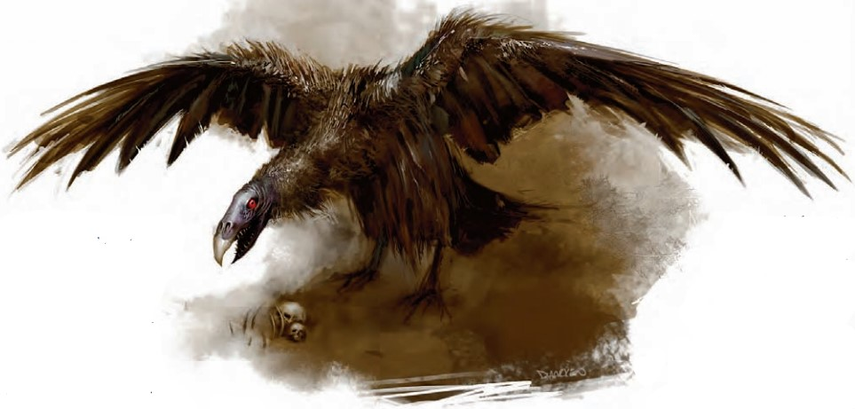

死骸鹫(Deadborn Vulture) CR 8
大型魔法兽
这只巨鸟有着黑色的羽毛,看起来像是一只秃鹫。它的羽毛覆盖不到头顶上乌木色的皮肤,翅膀表面似乎盖着一层油脂。锯齿状的鸟喙上,一对闪闪发亮的红眼睛凝视着你。

|
生命骰: |
9d10+18(67hp) |
|
先攻: |
+3 |
|
速度: |
10尺(2格),飞行70尺(不良) |
|
防御等级: |
18(-1体形,+3敏捷,+6天生),接触12,措手不及15 |
|
基本攻击/擒抱: |
+9/+19 |
|
攻击: |
近战
爪抓+14(1d6+6加疾病)或啮咬+12(1d8+3) |
|
全力攻击: |
近战
2爪抓+14(1d6+6加疾病)加啮咬+12(1d8+3) |
|
面宽/触及: |
10尺/5尺 |
|
特殊攻击: |
疾病,腐朽之息 |
|
特殊能力: |
死骸,黑暗视觉60尺,昏暗视觉 |
|
豁免: |
强韧+8,反射+11,意志+4 |
|
属性: |
力量22,敏捷17,体质14,智力10,感知12,魅力10 |
|
技能: |
威吓+8,聆听+11,侦查+15 |
|
专长: |
警觉,飞越攻击,闪电反射,多重攻击 |
|
地域: |
温带森林或山脉 |
|
组织: |
单独,成群,或跟随亡灵巫师 |
|
挑战等级: |
8 |
|
宝物: |
无 |
|
阵营: |
总是中立邪恶 |
|
进化: |
10-16HD(大型);17-27HD(超大型) |
|
等级调整: |
- |
死灵师从巨鹰或者巨猫头鹰的蛋中创造出了死骸鹫。当它们长大后,这种黑色的鸟儿数量不断增加,死后会变为不死生物。死骸鹫能听懂地底通用语,但是不能说话。
战斗:
死骸鹫通常是以一次俯冲攻击作为战斗的开始，它会优先使用飞越攻击能力，先消灭那些会飞的敌人。之后再凭借天空飞翔的能力，消灭地面上的敌人。当它感觉小命不保的时候，它会使用腐朽之息来影响尽可能多的敌人后逃走。
在死后，死骸鹫会变成僵尸。它会继续发动攻击，但因为它失去了智力，也许它会落到地面上进行攻击。
死骸(Deadbone)(Su):当死骸鹫生命值低于0时,它将会突然死去并立即转化成一只死骸鹫僵尸,继承生前的疾病攻击。这种转化不会使飞翔中的死骸鹫坠落。
疾病(Ex):爪抓,强韧DC16无效,潜伏期1天,伤害1d4力量,豁免DC由体质决定。
腐朽之息(Foul
Breath)(Ex):30尺锥形,一次/日,反胃1d6轮。强韧DC16无效。豁免DC由体质决定。
技能:死骸鹫在侦查检定上有+4种族加值。
死骸鹫僵尸(Deadborn
Vulture Zombie)
大型不死生物
|
生命骰: |
18d12+3(120hp) |
|
先攻: |
+2 |
|
速度: |
10尺(2格),飞行70尺(笨拙) |
|
防御等级: |
20(-1体形,+2敏捷,+9天生),接触11,措手不及18 |
|
基本攻击/擒抱: |
+9/+20 |
|
攻击: |
近战
爪抓+15(1d6+7加疾病)或啮咬+15(1d8+7)或挥击+15(1d8+7) |
|
全力攻击: |
近战
爪抓+15(1d6+7加疾病)或啮咬+15(1d8+7)或挥击+15(1d8+7) |
|
面宽/触及: |
10尺/5尺 |
|
特殊攻击: |
疾病 |
|
特殊能力: |
先攻+2;只有部分动作;黑暗视觉60尺;DR5/挥砍;不死生物特性 |
|
豁免: |
强韧+6,反射+8,意志+11 |
|
属性: |
力量24,敏捷15,体质-,智力-,感知10,魅力1 |
|
技能: |
聆听+0,侦查+0 |
|
专长: |
健壮 |
|
阵营: |
总是中立邪恶 |
|
进化: |
19-32HD(大型);33-54HD(超大型) |
战斗:
只有部分动作(EX):死骸鹫僵尸一轮只能进行一个标准动作或一个移动动作,它依旧能冲锋。
疾病(EX):爪抓,强韧DC16无效,潜伏期1天,伤害1d4力量,豁免DC由体质决定。
遭遇范例
最常遭遇的死骸鹫服务于强大的死灵法师或有影响力的黑卫。被如此奴役时,它们可能会大量聚集。如果被遗弃,它们通常会单独行动,偶尔会成对出现。
在遭遇中被杀死变成僵尸的死骸鹫不会计入遭遇等级。然而单独遭遇一只死骸鹫僵尸时,它的CR为6。
黑暗之翼(遭遇等级8-10):在一座古代森林中心的扭曲塔楼里,一名叫泽鲁祖斯(Zeluzuss)(中立邪恶人类男性10级死灵学派法师)的法师正阴谋计划向一个王国复仇。该王国的人民将他驱逐出家园,杀死了他的妻子和仆人。他在附近的山上杀死了几只巨鹰并收集了它们的蛋以孵化死骸鹫。
泽鲁祖斯已放出几只死骸鹫到野外掠夺其它巨型鸟类并散播瘟疫。甚至野生秃鹫都带着被它们杀死的尸体回到泽鲁祖斯的塔楼。在塔楼附近的野外或乡镇有可能遭遇到一两只这种令人恶心的大鸟。
黑暗骑士(遭遇等级12):泽鲁祖斯有时会骑在死骸鹫的背上飞行,收集新鲜尸体并攻击所有携带他憎恨的王国旗帜的人。进行突袭时他会带上第二只死骸鹫作为随从。
生态
死骸鹫因其制造过程而腐化,成为恐怖而凶狠的生物。不像普通的秃鹫,死骸鹫喜欢鲜活和有智慧的猎物。它们特别热衷于杀戮并吃掉其它巨型鸟类,它们非常适合执行这类任务。
死骸鹫无法生育。它们寻找其它巨型鸟类的其中一个原因是,巨鹰或巨猫头鹰的蛋如果由死骸鹫来孵化的话,出生地雏鸟将被腐化成死骸鹫。
死后变成僵尸的死骸鹫将不会吃喝、睡眠或繁殖。不像其它大部分僵尸,它们依然效忠生前的主人。
环境:作为被创造的生物,任何地方都可能出现死骸鹫,不过通常出现在巨型猛禽的栖息地――森林或高山。
典型身体特征:死骸鹫站立的高度超过9英尺,翼展为20英尺,看起来就像一只巨大的秃鹫。蓬乱油腻的黑色羽毛和发出红光的眼睛显示出这是一种更为邪恶的生物。死后,成为僵尸的死骸鹫看上去没什么变化,但它的肉很快会腐烂。
无论是正常还是僵尸形态,死骸鹫重约450磅。
阵营:死骸鹫身上没有任何高贵的品质,只是一种渴求死亡的贪婪生物。它们总是中立邪恶。
典型财宝
死骸鹫不重视财物,也不会拥有任何财宝。这些凶悍的猛禽服务的主人往往更为富有。
对于玩家角色
除非死骸鹫自愿接受坐骑训练否则不能被训练,这需要需要一个特殊鞍座和一个成功的交涉检定达到友好的态度。
训练一只死骸鹫需要四周的工作和一个DC25驯养动物检定。乘骑死骸鹫需要特殊鞍座。死骸鹫载着骑手依然可以战斗,但此骑手除非通过骑术检定否则不能同时战斗。
培育:培育死骸鹫需要一个巨鹰的蛋或巨型猫头鹰蛋价值2500GP,和必要的配方和组件,使蛋孵化需要花费5000GP。很少有训练者愿意训练一只死骸鹫,除非你额外支付2000GP。
负重能力:一只死骸鹫的轻载可达520磅;中载,521到1040磅;重载,1041到1560磅。对于一只死骸鹫僵尸来说,轻载高达700磅;中载,701到1400磅;重载,1401到2100磅。
死骸鹫的学识
拥有知识(神秘)等级的角色,可以了解有关死骸鹫的更多信息。当角色进行一次成功的技能检定时,可以得到如下所示的结果,包括更低检定能得到的结果。
|
DC |
结果 |
|
18 |
这个生物是死骸鹫,一种拥有两次生命的魔法兽,它会在死后化为僵尸。 |
|
23 |
死骸鹫携带疾病,并且能够吐出腐臭让人反胃的气息 |
|
28 |
某种特定的程序可以从巨猫头鹰和巨鹰的蛋里制造出死骸鹫,这个结果也会透露出具体的制造程序。 |